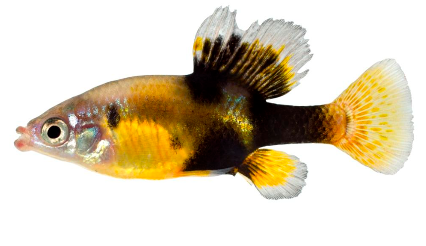

Systématique
- Ordre : Cyprinodontiformes
- Famille : Goodeidae
- Genre : Skiffia
- Espèce : S. multipunctata
- Auteur : (Pellegrin, 1901)

Skiffia multipunctata est un poisson vivipare matrotrophe de petite taille, endémique du plateau central du Mexique. Au sein de son genre, il est probablement celui qui arbore le patron de coloration le plus complexe. Sa morphologie est typique des petits Goodeidae, avec un corps modérément haut, une tête pointue et un profil dorsal légèrement voûté.
Les mâles atteignent environ 4 à 5 cm, tandis que les femelles sont légèrement plus grandes, approchant les 6 cm. La coloration de base est beige à olive argenté. Sa caractéristique principale est la présence de nombreuses taches noires irrégulières (le "mouchetage") réparties sur les flancs. Chez les mâles dominants, ces taches peuvent fusionner ou s'intensifier jusqu'à rendre le corps presque totalement sombre, contrastant avec des reflets crème ou dorés.
L'espèce est classée "En danger" (EN) par l'UICN. Sa distribution est fragmentée et ses populations sauvages sont menacées par la dégradation de la qualité de l'eau, l'eutrophisation des lacs et la compétition avec des espèces introduites. Elle est cependant bien établie en aquariophilie spécialisée.
Skiffia multipunctata est une espèce sociable et très active. En groupe, une hiérarchie s'établit entre les mâles, qui passent beaucoup de temps à parader. Les parades sont spectaculaires : le mâle déploie ses nageoires dorsale et anale tout en effectuant des mouvements saccadés pour attirer l'attention des femelles.
C'est un poisson curieux qui explore activement tous les niveaux de l'aquarium, bien qu'il ait une préférence pour les zones proches de la végétation. Il n'est pas agressif envers les autres espèces, mais sa vivacité peut stresser des poissons trop calmes. Un décor riche en plantes (mousses, plantes à feuilles fines) est nécessaire pour son équilibre.
Mode : Vivipare matrotrophe.
La reproduction est typique des Goodeinae. Les embryons se développent dans l'ovaire et reçoivent des nutriments via des trophotaeniae. La gestation dure entre 55 et 65 jours. Une particularité des Skiffia est la taille imposante des alevins à la naissance.
Une portée compte généralement entre 10 et 25 alevins. Les nouveau-nés mesurent environ 12 à 15 mm. Ils sont immédiatement capables de nager en pleine eau et de chercher de la nourriture. Les parents sont globalement tolérants envers leur progéniture, surtout si le bac est spacieux et bien planté.
Dimorphisme sexuel : Le mâle possède un andropodium (nageoire anale modifiée avec une encoche) et des nageoires plus larges. Le mouchetage noir est souvent beaucoup plus dense et intense chez le mâle. La femelle est plus massive et présente des taches plus discrètes ou éparses.
Espérance de vie : 3 à 5 ans en aquarium.
L'espèce est originaire du bassin du Rio Lerma, notamment dans les États de Michoacán et Jalisco. Elle fréquente les sources, les canaux à courant lent et les zones littorales des lacs peu profonds (comme le lac Pátzcuaro).
Son habitat idéal est constitué d'eaux claires à légèrement turbides, riches en végétation submergée et en débris organiques. L'eau y est alcaline et moyennement dure. Comme la plupart des goodeidés mexicains, elle apprécie des températures modérées et supporte bien les baisses nocturnes.
Répartition

Origine naturelle :
- Mexique : État de Michoacán et Jalisco (Bassin du Rio Lerma).
- Lac Pátzcuaro et canaux environnants.
- Endémique du plateau central.
Bien que l'espèce soit encore présente dans plusieurs localités, la pollution agricole (pesticides) et urbaine fragilise chaque année les populations restantes.
Paramètres de maintenance
Température : 18 à 24 °C. Éviter les températures élevées constantes au-dessus de 25 °C.
pH : 7,2 à 8,2.
GH : 10 à 20 °dGH.
Courant : Faible.
Volume conseillé : 80 L pour un groupe, dans un bac bien planté avec des zones de nage libre.
Régime alimentaire
Régime : Omnivore à tendance algivore.
En aquarium, il nécessite une alimentation équilibrée : flocons ou granulés de haute qualité riches en matière végétale. Il est essentiel de compléter avec des proies congelées ou vivantes (artémias, daphnies) et de laisser des algues naturelles se développer sur les roches, car il adore les brouter.